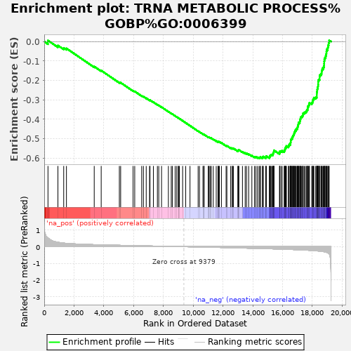

| | | Dataset | rankedList |
| Phenotype | NoPhenotypeAvailable |
| Upregulated in class | na_neg |
| GeneSet | TRNA METABOLIC PROCESS%GOBP%GO:0006399 |
| Enrichment Score (ES) | -0.6016522 |
| Normalized Enrichment Score (NES) | -2.718814 |
| Nominal p-value | 0.0 |
| FDR q-value | 0.0 |
| FWER p-Value | 0.0 |
Table: GSEA Results Summary

Fig 1: Enrichment plot: TRNA METABOLIC PROCESS%GOBP%GO:0006399
Profile of the Running ES Score & Positions of GeneSet Members on the Rank Ordered List
| PROBE | GENE SYMBOL | GENE_TITLE | RANK IN GENE LIST | RANK METRIC SCORE | RUNNING ES | CORE ENRICHMENT | | 1 | NSUN3 | | | 252 | 0.530 | 0.0056 | No |
| 2 | POP7 | | | 920 | 0.263 | -0.0200 | No |
| 3 | CTU1 | | | 1308 | 0.216 | -0.0326 | No |
| 4 | CTU2 | | | 1492 | 0.201 | -0.0351 | No |
| 5 | LAGE3 | | | 3357 | 0.121 | -0.1284 | No |
| 6 | PUS1 | | | 3825 | 0.110 | -0.1490 | No |
| 7 | PSTK | | | 5044 | 0.083 | -0.2099 | No |
| 8 | RPP25 | | | 5132 | 0.081 | -0.2116 | No |
| 9 | TRPT1 | | | 5966 | 0.064 | -0.2530 | No |
| 10 | TSEN2 | | | 6076 | 0.062 | -0.2565 | No |
| 11 | TRMT61A | | | 6544 | 0.053 | -0.2791 | No |
| 12 | PARS2 | | | 6659 | 0.051 | -0.2833 | No |
| 13 | TRMT1L | | | 6848 | 0.047 | -0.2914 | No |
| 14 | KIAA1456 | | | 7072 | 0.043 | -0.3016 | No |
| 15 | DUS1L | | | 7103 | 0.043 | -0.3017 | No |
| 16 | DPH3 | | | 7329 | 0.038 | -0.3121 | No |
| 17 | AIMP2 | | | 7598 | 0.033 | -0.3250 | No |
| 18 | PUSL1 | | | 7691 | 0.031 | -0.3287 | No |
| 19 | DTD1 | | | 7878 | 0.028 | -0.3375 | No |
| 20 | TSEN34 | | | 8337 | 0.019 | -0.3608 | No |
| 21 | SARS2 | | | 8528 | 0.016 | -0.3702 | No |
| 22 | BCDIN3D | | | 8607 | 0.014 | -0.3738 | No |
| 23 | EARS2 | | | 8791 | 0.011 | -0.3830 | No |
| 24 | SEPSECS | | | 8896 | 0.009 | -0.3881 | No |
| 25 | METTL2A | | | 9005 | 0.007 | -0.3935 | No |
| 26 | POLR2L | | | 9014 | 0.007 | -0.3937 | No |
| 27 | PPA2 | | | 9073 | 0.006 | -0.3966 | No |
| 28 | KARS | | | 9293 | 0.001 | -0.4080 | No |
| 29 | ZBTB8OS | | | 9500 | -0.002 | -0.4187 | No |
| 30 | METTL8 | | | 9788 | -0.008 | -0.4335 | No |
| 31 | TARS | | | 10333 | -0.019 | -0.4613 | No |
| 32 | ADAT1 | | | 10425 | -0.021 | -0.4654 | No |
| 33 | CLP1 | | | 10656 | -0.025 | -0.4765 | No |
| 34 | GTF3C6 | | | 10726 | -0.026 | -0.4792 | No |
| 35 | ELAC1 | | | 10732 | -0.026 | -0.4785 | No |
| 36 | TPRKB | | | 11017 | -0.032 | -0.4923 | No |
| 37 | TSEN54 | | | 11036 | -0.033 | -0.4921 | No |
| 38 | TRMU | | | 11076 | -0.033 | -0.4929 | No |
| 39 | GARS | | | 11160 | -0.035 | -0.4960 | No |
| 40 | YARS | | | 11213 | -0.036 | -0.4975 | No |
| 41 | GTPBP3 | | | 11352 | -0.039 | -0.5033 | No |
| 42 | TRMT12 | | | 11549 | -0.043 | -0.5121 | No |
| 43 | FARSA | | | 11665 | -0.045 | -0.5165 | No |
| 44 | DUS4L | | | 11685 | -0.045 | -0.5159 | No |
| 45 | BRF1 | | | 11725 | -0.047 | -0.5163 | No |
| 46 | HSD17B10 | | | 11761 | -0.047 | -0.5164 | No |
| 47 | CSTF2 | | | 11897 | -0.050 | -0.5217 | No |
| 48 | DALRD3 | | | 12211 | -0.057 | -0.5361 | No |
| 49 | CPSF1 | | | 12263 | -0.059 | -0.5367 | No |
| 50 | DUS3L | | | 12518 | -0.065 | -0.5477 | No |
| 51 | TRMT10B | | | 12616 | -0.067 | -0.5504 | No |
| 52 | HARS2 | | | 12640 | -0.067 | -0.5492 | No |
| 53 | TRMT44 | | | 12704 | -0.069 | -0.5501 | No |
| 54 | TSEN15 | | | 13006 | -0.076 | -0.5632 | No |
| 55 | ANKRD16 | | | 13012 | -0.076 | -0.5607 | No |
| 56 | VARS | | | 13045 | -0.077 | -0.5597 | No |
| 57 | ELP6 | | | 13069 | -0.077 | -0.5581 | No |
| 58 | GTF3C1 | | | 13309 | -0.083 | -0.5677 | No |
| 59 | OSGEPL1 | | | 13493 | -0.087 | -0.5742 | No |
| 60 | MARS2 | | | 13583 | -0.089 | -0.5757 | No |
| 61 | RPP40 | | | 13727 | -0.093 | -0.5799 | No |
| 62 | TYW1 | | | 13942 | -0.097 | -0.5877 | No |
| 63 | GTF3C5 | | | 14116 | -0.101 | -0.5931 | No |
| 64 | RPP14 | | | 14209 | -0.104 | -0.5943 | No |
| 65 | EXOSC9 | | | 14316 | -0.106 | -0.5960 | No |
| 66 | GTF3C4 | | | 14424 | -0.109 | -0.5978 | Yes |
| 67 | THUMPD2 | | | 14491 | -0.111 | -0.5973 | Yes |
| 68 | THG1L | | | 14512 | -0.112 | -0.5944 | Yes |
| 69 | CPSF4 | | | 14652 | -0.115 | -0.5976 | Yes |
| 70 | METTL2B | | | 14656 | -0.115 | -0.5936 | Yes |
| 71 | DARS2 | | | 14711 | -0.116 | -0.5923 | Yes |
| 72 | GRSF1 | | | 14880 | -0.120 | -0.5969 | Yes |
| 73 | C9orf64 | | | 14884 | -0.120 | -0.5927 | Yes |
| 74 | FARSB | | | 14911 | -0.121 | -0.5898 | Yes |
| 75 | QTRTD1 | | | 15120 | -0.127 | -0.5962 | Yes |
| 76 | QTRT1 | | | 15141 | -0.128 | -0.5927 | Yes |
| 77 | WARS | | | 15142 | -0.128 | -0.5882 | Yes |
| 78 | FTSJ1 | | | 15188 | -0.129 | -0.5860 | Yes |
| 79 | SLFN11 | | | 15229 | -0.130 | -0.5835 | Yes |
| 80 | GATC | | | 15303 | -0.131 | -0.5826 | Yes |
| 81 | WARS2 | | | 15360 | -0.133 | -0.5808 | Yes |
| 82 | RPUSD4 | | | 15366 | -0.133 | -0.5763 | Yes |
| 83 | IARS2 | | | 15385 | -0.134 | -0.5725 | Yes |
| 84 | WDR4 | | | 15405 | -0.134 | -0.5688 | Yes |
| 85 | SARS | | | 15426 | -0.135 | -0.5650 | Yes |
| 86 | TRMT2B | | | 15427 | -0.135 | -0.5602 | Yes |
| 87 | RARS | | | 15798 | -0.145 | -0.5745 | Yes |
| 88 | RPP38 | | | 15811 | -0.146 | -0.5699 | Yes |
| 89 | RPP21 | | | 15817 | -0.146 | -0.5650 | Yes |
| 90 | TRMT112 | | | 15895 | -0.148 | -0.5637 | Yes |
| 91 | TRMT5 | | | 15977 | -0.151 | -0.5626 | Yes |
| 92 | MOCS3 | | | 16115 | -0.154 | -0.5643 | Yes |
| 93 | FAM98B | | | 16136 | -0.155 | -0.5599 | Yes |
| 94 | ALKBH1 | | | 16147 | -0.155 | -0.5549 | Yes |
| 95 | AARS2 | | | 16186 | -0.157 | -0.5513 | Yes |
| 96 | NARS | | | 16194 | -0.157 | -0.5461 | Yes |
| 97 | MTFMT | | | 16247 | -0.159 | -0.5432 | Yes |
| 98 | CDK5RAP1 | | | 16255 | -0.159 | -0.5379 | Yes |
| 99 | VARS2 | | | 16395 | -0.164 | -0.5393 | Yes |
| 100 | PTGES3L-AARSD1 | | | 16427 | -0.165 | -0.5351 | Yes |
| 101 | TRDMT1 | | | 16445 | -0.166 | -0.5301 | Yes |
| 102 | POP5 | | | 16519 | -0.168 | -0.5279 | Yes |
| 103 | TRUB1 | | | 16534 | -0.169 | -0.5227 | Yes |
| 104 | METTL1 | | | 16545 | -0.169 | -0.5172 | Yes |
| 105 | TARSL2 | | | 16551 | -0.169 | -0.5114 | Yes |
| 106 | ELAC2 | | | 16552 | -0.169 | -0.5054 | Yes |
| 107 | POP1 | | | 16594 | -0.170 | -0.5015 | Yes |
| 108 | TRMT61B | | | 16629 | -0.172 | -0.4972 | Yes |
| 109 | PUS10 | | | 16679 | -0.174 | -0.4936 | Yes |
| 110 | KTI12 | | | 16682 | -0.174 | -0.4875 | Yes |
| 111 | TP53RK | | | 16723 | -0.175 | -0.4834 | Yes |
| 112 | POLR3K | | | 16748 | -0.176 | -0.4784 | Yes |
| 113 | NSUN2 | | | 16778 | -0.177 | -0.4736 | Yes |
| 114 | METTL6 | | | 16786 | -0.178 | -0.4677 | Yes |
| 115 | CARS | | | 16831 | -0.179 | -0.4636 | Yes |
| 116 | AARS | | | 16842 | -0.180 | -0.4577 | Yes |
| 117 | C9orf156 | | | 16910 | -0.183 | -0.4548 | Yes |
| 118 | TRNT1 | | | 16921 | -0.183 | -0.4488 | Yes |
| 119 | EXOSC7 | | | 16994 | -0.186 | -0.4460 | Yes |
| 120 | LSM6 | | | 17009 | -0.186 | -0.4401 | Yes |
| 121 | OSGEP | | | 17027 | -0.187 | -0.4343 | Yes |
| 122 | THUMPD3 | | | 17050 | -0.188 | -0.4288 | Yes |
| 123 | MARS | | | 17067 | -0.189 | -0.4229 | Yes |
| 124 | POP4 | | | 17079 | -0.189 | -0.4168 | Yes |
| 125 | TRIT1 | | | 17157 | -0.192 | -0.4140 | Yes |
| 126 | TRMT10C | | | 17165 | -0.193 | -0.4075 | Yes |
| 127 | ALKBH8 | | | 17179 | -0.193 | -0.4013 | Yes |
| 128 | TRMT1 | | | 17207 | -0.194 | -0.3958 | Yes |
| 129 | ELP5 | | | 17217 | -0.195 | -0.3894 | Yes |
| 130 | EXOSC10 | | | 17282 | -0.198 | -0.3857 | Yes |
| 131 | LCMT2 | | | 17342 | -0.200 | -0.3817 | Yes |
| 132 | C14orf166 | | | 17374 | -0.201 | -0.3761 | Yes |
| 133 | NSUN6 | | | 17377 | -0.201 | -0.3691 | Yes |
| 134 | KIAA0391 | | | 17451 | -0.204 | -0.3656 | Yes |
| 135 | C2orf49 | | | 17520 | -0.207 | -0.3618 | Yes |
| 136 | YARS2 | | | 17599 | -0.211 | -0.3584 | Yes |
| 137 | GTF3C2 | | | 17631 | -0.212 | -0.3525 | Yes |
| 138 | DARS | | | 17683 | -0.215 | -0.3476 | Yes |
| 139 | TYW3 | | | 17697 | -0.215 | -0.3406 | Yes |
| 140 | PUS3 | | | 17701 | -0.216 | -0.3331 | Yes |
| 141 | URM1 | | | 17758 | -0.218 | -0.3283 | Yes |
| 142 | TYW5 | | | 17786 | -0.220 | -0.3219 | Yes |
| 143 | RARS2 | | | 17804 | -0.220 | -0.3149 | Yes |
| 144 | TARS2 | | | 17960 | -0.229 | -0.3149 | Yes |
| 145 | ELP2 | | | 18013 | -0.232 | -0.3094 | Yes |
| 146 | CARS2 | | | 18025 | -0.233 | -0.3017 | Yes |
| 147 | DTD2 | | | 18073 | -0.236 | -0.2957 | Yes |
| 148 | GTF3C3 | | | 18105 | -0.239 | -0.2889 | Yes |
| 149 | THADA | | | 18227 | -0.248 | -0.2864 | Yes |
| 150 | PPA1 | | | 18298 | -0.253 | -0.2811 | Yes |
| 151 | QARS | | | 18300 | -0.253 | -0.2722 | Yes |
| 152 | AIMP1 | | | 18302 | -0.253 | -0.2632 | Yes |
| 153 | FARS2 | | | 18319 | -0.254 | -0.2550 | Yes |
| 154 | RPP30 | | | 18330 | -0.255 | -0.2465 | Yes |
| 155 | TARBP1 | | | 18348 | -0.257 | -0.2383 | Yes |
| 156 | ADAT2 | | | 18377 | -0.259 | -0.2305 | Yes |
| 157 | SLFN13 | | | 18389 | -0.260 | -0.2218 | Yes |
| 158 | DUS2 | | | 18398 | -0.261 | -0.2130 | Yes |
| 159 | SSB | | | 18399 | -0.261 | -0.2037 | Yes |
| 160 | EXOSC3 | | | 18423 | -0.263 | -0.1956 | Yes |
| 161 | ELP3 | | | 18489 | -0.270 | -0.1894 | Yes |
| 162 | CDKAL1 | | | 18490 | -0.270 | -0.1798 | Yes |
| 163 | DDX1 | | | 18510 | -0.272 | -0.1711 | Yes |
| 164 | LARS2 | | | 18588 | -0.279 | -0.1653 | Yes |
| 165 | THUMPD1 | | | 18627 | -0.284 | -0.1572 | Yes |
| 166 | IKBKAP | | | 18634 | -0.285 | -0.1473 | Yes |
| 167 | TRMT6 | | | 18672 | -0.288 | -0.1390 | Yes |
| 168 | IARS | | | 18741 | -0.299 | -0.1320 | Yes |
| 169 | NARS2 | | | 18784 | -0.304 | -0.1234 | Yes |
| 170 | MTO1 | | | 18791 | -0.306 | -0.1128 | Yes |
| 171 | TRMT13 | | | 18798 | -0.307 | -0.1022 | Yes |
| 172 | NAT10 | | | 18810 | -0.308 | -0.0918 | Yes |
| 173 | EPRS | | | 18847 | -0.315 | -0.0825 | Yes |
| 174 | HARS | | | 18900 | -0.327 | -0.0736 | Yes |
| 175 | ELP4 | | | 18926 | -0.334 | -0.0631 | Yes |
| 176 | EXOSC8 | | | 18949 | -0.340 | -0.0521 | Yes |
| 177 | RTCB | | | 18964 | -0.344 | -0.0406 | Yes |
| 178 | LARS | | | 19037 | -0.367 | -0.0314 | Yes |
| 179 | TRMT11 | | | 19059 | -0.378 | -0.0190 | Yes |
| 180 | EXOSC2 | | | 19097 | -0.399 | -0.0068 | Yes |
| 181 | QRSL1 | | | 19132 | -0.427 | 0.0066 | Yes |
Table: GSEA details [plain text format]
Fig 2: TRNA METABOLIC PROCESS%GOBP%GO:0006399: Random ES distribution
Gene set null distribution of ES for TRNA METABOLIC PROCESS%GOBP%GO:0006399